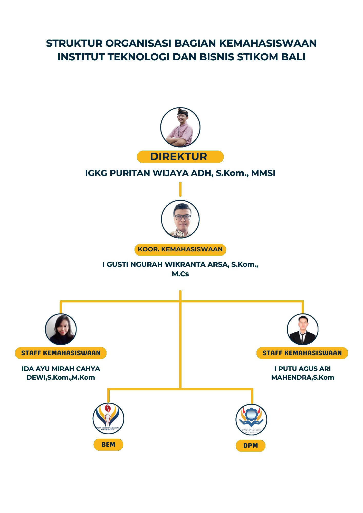
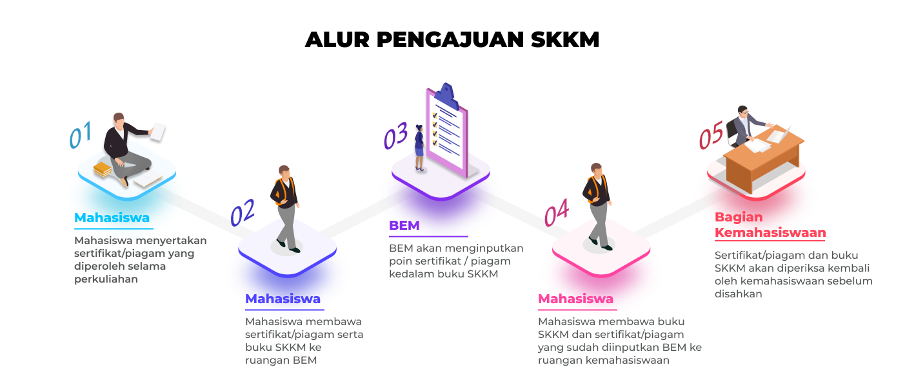

Aktivitas & Organisasi Mahasiswa

Kemahasiswaan ITB STIKOM Bali merupakan wadah dalam segala bentuk kegiatan-kegiatan ekstrakurikuler mahasiswa yang berhubungan dengan perkembangan soft skill mahasiswa. Terdapat beberapa komponen strategi kemahasiswaan yang dibagi menjadi beberapa bidang.
Sesuai maksud dan lingkup kegiatannya, satuan organisasi mahasiswa di ITB STIKOM Bali terdiri dari DPM, BEM, HIMAS, HIMAPRODI, dan UKM. Adapun Daftar Organisasi Mahasiswa (ORMAWA) yang aktif di ITB STIKOM Bali :
SKKM adalah suatu pengakuan dan penilaian terhadap kegiatan yang diikuti mahasiswa ITB STIKOM Bali dalam pengembangan kegiatan kemahasiswaan yang diakui dalam bentuk kredit dengan besar sesuai dengan jenis dan pelaksanaan kegiatan yang diikuti.
Tujuan SKKM adalah meningkatkan peranan dan partisipasi aktif mahasiswa dalam setiap kegiatan kemahasiswaan dalam rangka peningkatan wawasan akademis dan non akademis mahasiswa, meningkatkan rasa kebersamaan dan persaudaraan antar mahasiswa, memberikan penghargaan atas partisipasi aktif mahasiswa dalam setiap kegiatan.
Penerapan SKKM merupakan suatu persayarat wajib bagi seluruh mahasiswa ITB STIKOM Bali yang akan mengikuti Ujian Akhir dimana dalam memperoleh pengesahan bebas administrasi dari Kemahasiswaan wajib menunjukkan Buku SKKM dengan point yang sudah dipenuhi. Mengikuti Kegiatan wajib dan Kegiatan Pilihan dimana S1 tolal kegiatan pilihan yg wajib diikuti 50 Point dan D3 32 Poin. Adapun alur pengakuan SKKM sebagai berikut:

Ruang kuliah ber-AC dengan fasilitas multimedia lengkap
Lab komputer dengan perangkat terbaru dan koneksi internet cepat
Koleksi buku dan jurnal digital yang dapat diakses 24/7
Free WiFi dengan kecepatan tinggi di seluruh area kampus
Kantin dan cafe dengan menu bervariasi dan harga terjangkau
Lapangan olahraga dan ruang fitness untuk mahasiswa
Tempat ibadah yang nyaman untuk seluruh sivitas akademika
Parkir motor dan mobil yang aman dan terorganisir
UKM HIMATOGRAPHY meraih juara pertama dalam lomba fotografi tingkat nasional
UKM Dance of STIKOM mendapat penghargaan penampilan terbaik
Tim dari Coding Club berhasil meraih runner up dalam kompetisi coding
UKM Tari Tradisional menjadi yang terbaik di Festival Budaya Bali
Kembangkan potensi dan bakat Anda bersama berbagai UKM dan organisasi di ITB STIKOM Bali
Hubungi Kami